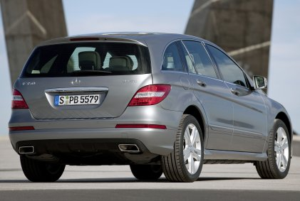
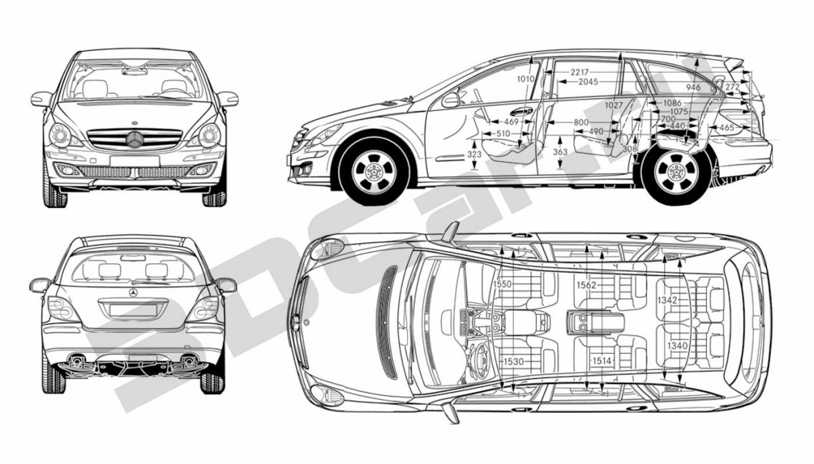
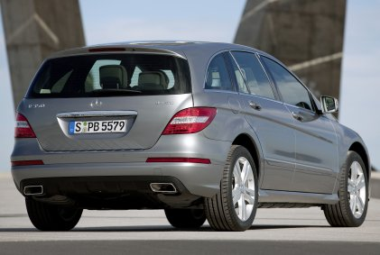
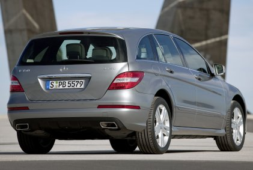
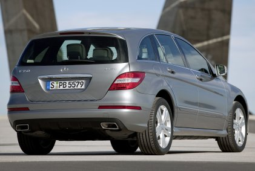
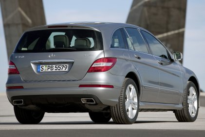

.
■ Mercedes-Benz Pkw GALERIE
R-klasse
251
テンプレに戻る
本サイトは、戦後のメルセデス・ベンツの画像を車種別、時系列順に掲載しています。
Limousine / Kombi
A-klasse
B-klasse
C-klasse
E-klasse
S-klasse
Großer・Maybach
Coupé / Roadster
CLA
CLC・C-Coupé
CLK
CE・E-Coupé
CLS
SEC・CL・S-Coupé
SLK・SLC
SL・SLC
Supersport
MPV / Geländewagen
GLA
GLK・GLC
R-klasse
ML・GLE
GL・GLS
G-klasse
Kastenwagen / Pick-up
Vaneo・Citan
V-klasse・Vito
X-klasse
R-klasse
W251 / V251
2005 - 2017
V251 (Lang)
Modellpflege
2007
V251 (Lang)
Modellpflege
2010

V251 (Lang)
abmessungen 上 W251 (Kurz) 、下 V251 (Lang)



 



 
